Ford Design Integral Power Steering Gear · 13-06-03b
-
Hold the steering gear over a drain pan in an inverted position and cycle the input shaft several times to drain the remaining fluid from the gear.
-
Mount the gear in a soft-jawed
-
Turn the input shaft to either stop then, turn it back approximately - 1 3/4 turns to center the gear.
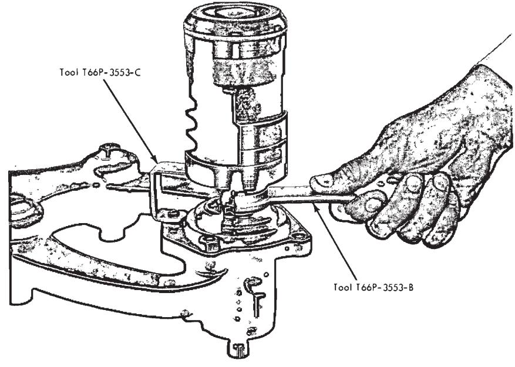
Fig. 3 — Removing Worm Bearing Race Nut -
Remove the two sector shaft cover attaching screws and the identification tag:
-
Tap the lower end of the sector
- shaft with a soft-faced hammer to loosen it, then lift the cover and shaft from the housing as an assembly. Discard the O-ring.
-
Remove the four valve housing attaching bolts. Lift the valve housing from the steering gear housing while holding the piston to prevent it from rotating off the worm shaft.
-
Remove the valve housing and lube passage O-rings and discard them.
-
Place the valve housing, worm and piston assembly in the bench mounted holding fixture Tool T57L-500-A with the piston on the top.
-
Rotate the piston upward (back off) 3 1/2 turns.
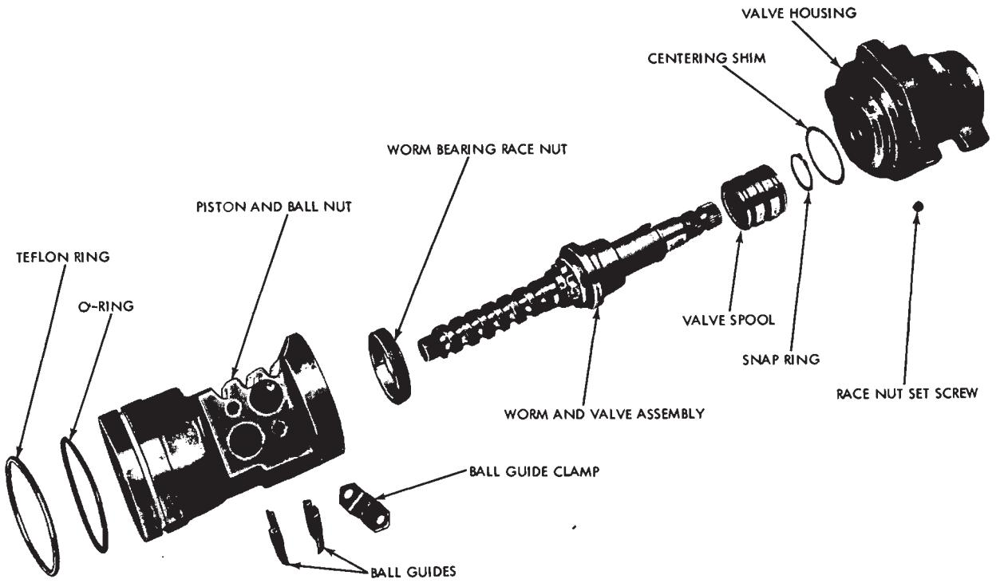
Fig. 4 — Installing Worm Bearing Race Nut -
Insert Tool T66P-3553-C (with the arm facing away from the piston) into a bolt hole in the valve housing. Rotate the arm into position under the piston (Fig. 3).
-
Loosen the allen head race nut set screw from the valve housing.
-
Using Tool T66P-3553-B, loosen the worm bearing race nut.
-
Lift the piston-worm assembly from the valve housing. During removal hold the piston to prevent it from spinning off of the shaft.
-
Change the power steering valve centering shim.
-
Install the piston-worm assembly into the valve housing. Hold the piston to prevent it from spinning off of the shaft.
-
Install the worm bearing race nut and torque to specification using Tool T66P-3553-B (Fig. 4).
-
Install the race nut set screw (allen head) through the valve housing. Torque to specification.
-
Rotate the piston upward (back off) 1/2 turn and remove Tool T66P-3553-C.
-
Remove the valve housing, worm, and piston assembly from the holding fixture.
-
Position a new lube passage O-ring in the counterbore of the gear housing.
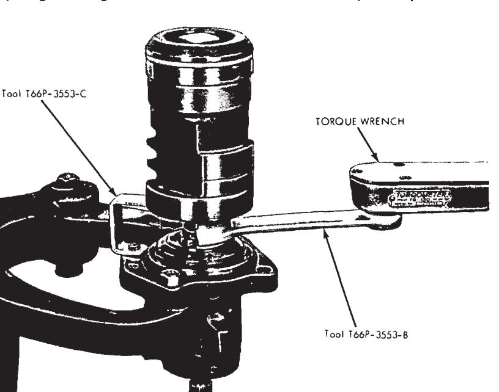
Fig. 5 — Ball Nut and Valve Housing Disassembled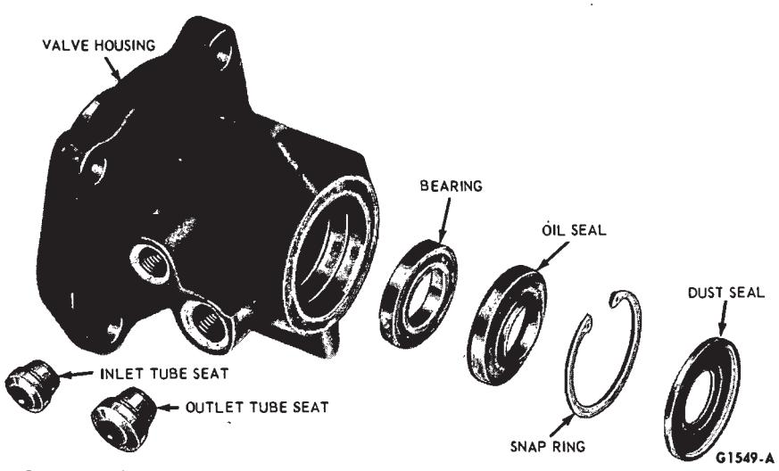
Fig. 6 — Valve Housing Disassembled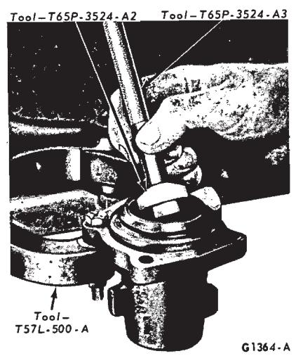
Fig. 7 — Removing Bearing and Oil Seal -
Apply vaseline to the teflon seal on the piston.
-
Place a new O-ring on the valve housing.
-
Slide the piston and valve into the gear housing being careful not to damage the teflon seal.
-
Align the lube passage in the valve housing with the one in the gear housing, and install but do not tighten the attaching bolts.
-
Rotate the ball nut so that the teeth are in the same place as the sector teeth. Tighten the four valve housing attaching bolts to specification.
-
Position the sector shaft cover O-ring in the steering gear housing. Turn the input shaft as required to center the piston.
-
Apply vaseline to the sector shaft journal; then, position the sector shaft and cover assembly in the gear housing. Install the steering gear identification tag and the two sector shaft cover attaching bolts.
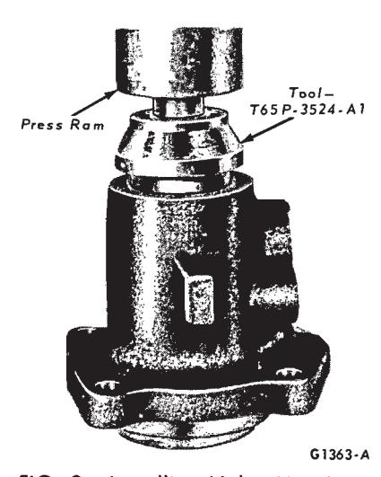
Fig. 8 — Installing Valve Housing Bearing -
Position an in-lb torque wrench on the gear input shaft and adjust the meshload to approximately 4 in-lbs. Then, torque the sector shaft cover attaching bolts to specification.
-
After the cover attaching bolts have been tightened to specification, adjust the meshload to specification with an in-lb torque wrench.
Steering Gear Disassembly
-
Hold the steering gear over a drain pan in an inverted position and cycle the input shaft several times to drain the remaining fluid from the gear
-
Mount the gear in a soft-jawed
- vise.
- Remove the lock nut from the adjusting screw.
-
Turn the input shaft to either stop; then, turn it back approximately 1 3/4 turns to center the gear.
-
Remove the two sector shaft cover attaching screws and the identification tag.
-
Tap the lower end of the sector shaft with a soft-hammer to loosen it, then, lift the cover and shaft from the housing as an assembly. Discard the O-ring.
-
Turn the sector shaft cover counterclockwise off the adjuster screw.
-
Remove the four valve housing attaching bolts. Lift the valve housing from the steering gear housing while holding the piston to prevent it from rotating off the worm shaft. Remove the valve housing and the lube passage O-rings and discard them.
-
Stand the valve body and piston on end with the piston end down. Rotate the input shaft counterclockwise out of the piston allowing the ball bearings to drop into the piston.
-
Place a cloth over the open end of the piston and turn it upside down to remove the balls.
-
Remove the two screws that attach the ball guide clamp (Fig. 5) to the ball nut and remove the clamp and the guides.
-
Install the valve body assembly in the holding fixture (do not clamp in a vise) and loosen the race nut screw (allen head) from the valve housing and remove the worm bearing race nut as shown in Fig. 3.
-
Carefully slide the input shaft, worm and valve assembly out of the valve housing. Due to the close diametrical clearance between the spool and housing, the slightest cocking of the spool may cause it to jam in the housing.
-
Remove the shim from the valve housing bore.
Parts Repair or Replacement
Valve Housing
-
Remove the dust seal (Fig. 6) from the rear of the valve housing with Tools T59L-100-B and T58L-101-A and discard the seal.
-
Remove the snap ring from the valve housing.
-
Turn the fixture to place the valve housing in an inverted position.
-
Insert the special tool in the valve body assembly opposite the seal end and gently tap the bearing at d seal out of the housing as shown in Fig. 7. Discard the seal. Caution must be exercised when inserting and removing the tool to prevent damage to the valve bore in the housing.
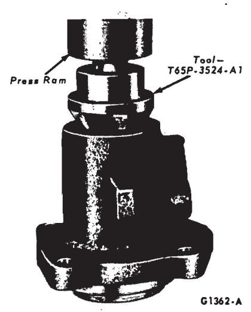
Fig. 9 — Installing Oil Seal in Valve Housing -
Remove the fluid inlet and outlet tube seats with an EZ-out if they are damaged.
-
Coat the fluid inlet and outlet tube seats with vaseline and position them in the housing. Install and tighten the tube nuts to press the seats to the proper location.
-
Coat the bearing and seal surface of the housing with a film of vaseline.
-
Position the bearing in the valve housing. Seat the bearing in the valve housing with the tool shown in Fig. 8. Make sure that the bearing is free to rotate
-
Dip the new oil seal in gear lubricant; then, place it in the housing with the metal side of the seal facing outward. Drive the seal into the housing until the outer edge of seal does not quite clear the snap ring groove (Fig. 9).
-
Place the snap ring in the housing: then, drive on the ring with the tool shown in Fig. 9 until the snap ring seats in its groove to properly locate the seal.
-
Place the dust seal in the housing with the dished side (rubber side) facing out. Drive the dust seal into place with the tool shown in Fig. 9. The seal must be located behind the undercut in the input shaft when it is installed.
Worm and Valve
-
Remove the snap ring from the end of the actuator.
-
Slide the control valve spool (Fig. 5) off the actuator.
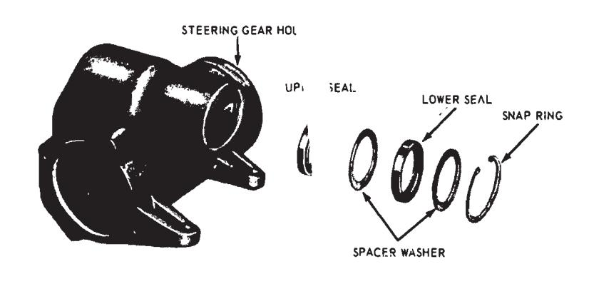
Fig. 10 — Steering Gear Housing Disassembled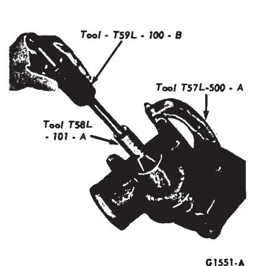
Fig. 11 — Removing Lower Seal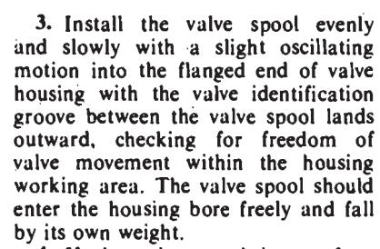
Fig. 12 — Installing Sector Shaft Inner Seal -
If the valve spool is not free, check for burrs at the outward edges of the working lands in the housing and remove with a hard stone.
-
Check the valve for burrs and if burrs are found, stone the valve in a radial direction only. Check for freedom of the valve again.
-
Remove the valve spool from the housing
-
Slide the spool onto the actuator making sure that the groove in the spool annulus is toward the worm.
-
Install the snap ring to retain the spool.
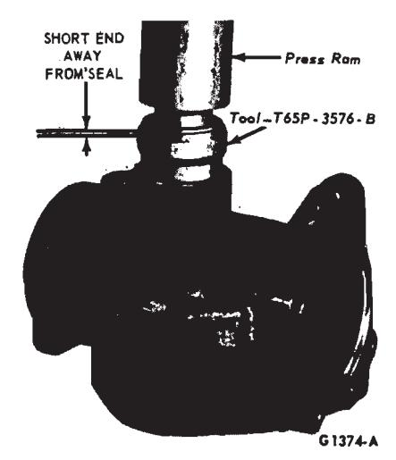
-
Check the clearance between the spool and the snap ring. The clearance should be between .0005-.035 inch. If the clearance is not within these limits, select a snap ring that will allow a clearance of .002 inch.
Piston and Ball Nut
- Remove the teflon ring and the O-ring (Fig. 5) from the piston and ball nut.
- Dip a new O-ring in gear lubricant and install it on the piston and ball nut.
- Install a new teflon ring on the piston and ball nut being careful not to stretch it any more than necessary.
Steering Gear Housing
-
Remove the snap ring and the spacer washer (Fig. 10) from the lower end of the steering gear housing.
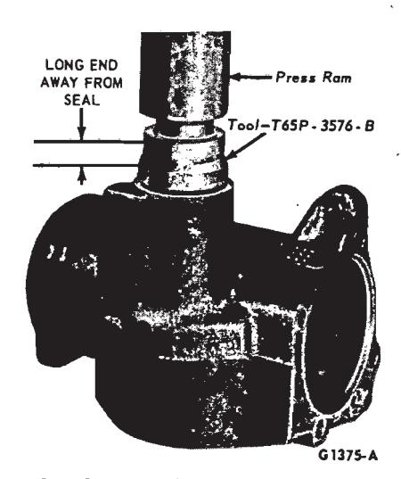
Fig. 13 — Installing Sector Shaft Outer Seal -
Remove the lower seal from the housing as shown in Fig. 11. Lift the spacer washer from the housing.
-
Remove the upper seal in the same manner as the lower seal.
-
Dip both sector shaft seals in gear lubricant.
-
Apply Lubricant to the sector shaft seal bore of the housing and position the sector shaft inner seal into the housing with the lip facing inward. Press the seal into place with the tool shown in Fig. 12. Place a spacer washer (0.090 inch) on top of the seal and apply more Lubricant to the housing bore.
-
Place the outer seal in the housing with the lip facing inward and press it into place as shown in Fig. 13. Then, place a 0.090 inch spacer washer on top of the seal.
-
Position the snap ring in the housing. Press the snap ring into the housing with the tool shown in Fig. 13 to properly locate the seals and engage the snap ring in the groove.
Steering Gear Assembly
Do not clean, wash, or soak seals in cleaning solvent.
-
Mount the valve housing in the holding fixture with the flanged end up.
-
Place the required thickness valve spool centering shim (Fig. 5) in the housing. Use one shim only.
-
Carefully install the worm and valve in the housing.
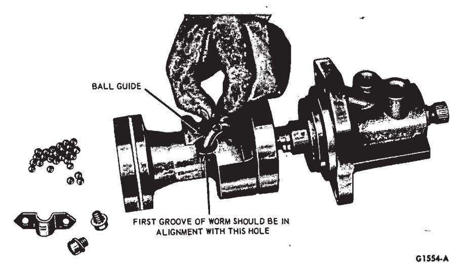
Fig. 14 — Assembling Piston on Worm Shaft -
Install the race nut in the housing and torque it to specification.
-
Install the race nut set screw (allen head) through the valve housing and torque it to specification.
-
Place the piston on the bench with the ball guide holes facing up. Insert the worm shaft into the piston so that the first groove is in alignment with the hole nearest to the center of the piston (Fig. 14).
-
Place the ball guide in the piston. Place the 27 to 29 balls in the ball guide (Fig. 14) turning the worm in a clockwise direction as viewed from the input end of the shaft. If all of the balls have not been fed into the guide upon reaching the right stop, rotate the input shaft in one direction and then in the other while installing the balls. After the balls have been installed, do not rotate the input shaft or the piston more than 3 1/2 turns off the right stop to prevent the balls from falling out of the circuit.
-
Secure the guides in the ball nut with the clamp (Fig. 5).
-
Position a new lube passage Oring in the counterbore of the gear housing.
-
Apply vaseline to the teflon seal on the piston.
-
Place a new O-ring on the valve housing.
-
Slide the piston and valve into the gear housing being careful not to damage the teflon seal.
-
Align the tube passage in the valve housing with the one in the gear housing, and install but do not tighten the attaching bolts.
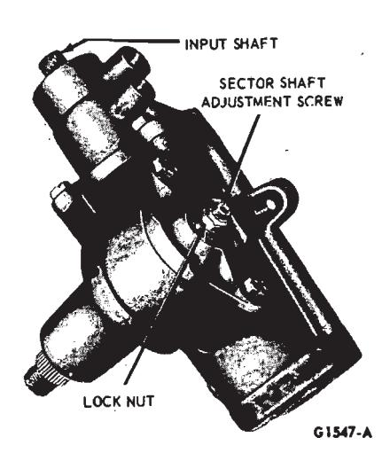
Fig. 15 — Adjusting Mesh -
Rotate the ball nut so that the teeth are in the same plane as the sector teeth. Tighten the four valve housing attaching bolts to specifications.
-
Position the sector shaft cover O-ring in the steering gear housing. turn the input shaft as required to center the piston.
-
Apply vaseline to the sector shaft journal then position the sector shaft and cover assembly in the gear housing. Install the steering identification tag and two sector shaft cover attaching bolts. Torque the bolts to specifications.
-
Attach an in-lb torque wrench to the input shaft. Adjust the mesh load to specifications as shown in Fig.